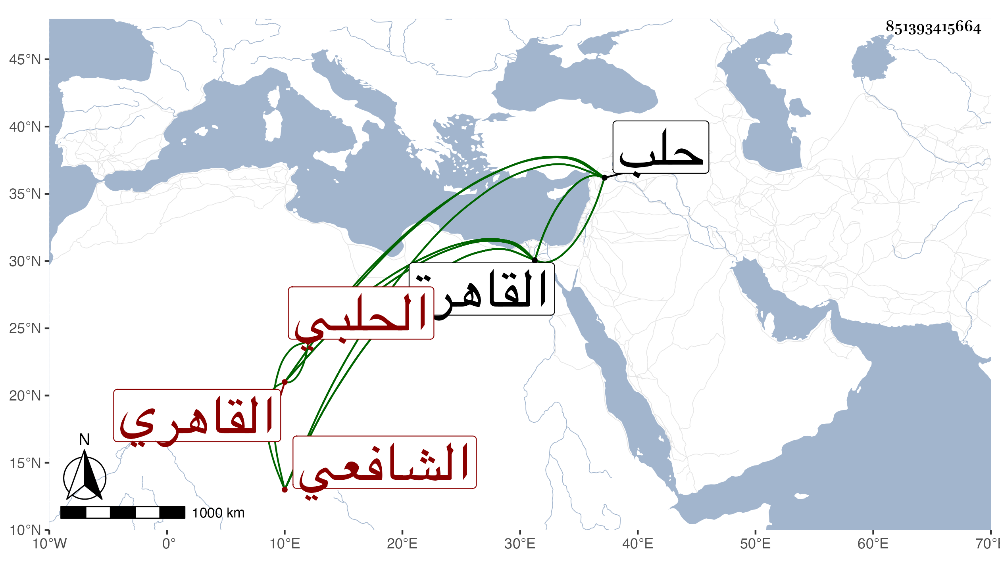

0902Sakhawi.DawLamic.ITO20230111-ara1.EIS1600.851393415664
Biography ID: 851393415664
896
عبد اللطيف بن أبي بكر بن سليمان بن إسماعيل بن يوسف بن عثمان ابن عماد المعين أبو اللطائف بن الشرف بن العلم الحلبي الأصل القاهري الشافعي سبط بني العجمي أحد البيوت المشهورين بحلب ووالد الكمال محمد الآتي هو وجده . ويعرف بابن الأشقر ، ولد في سنة اثنتي عشرة وثمانمائة بالقاهرة ونشأ تحت كنف أبيه فحفظ القرآن وصلى به في سنة أربع وعشرين وحفظ عدة مختصرات واشتغل في الفقه عند الشرف السبكي وغيره ، وقرأ في كثير من الفنون علي الشمني والشمس الرومي وكتب الخط المنسوب وشارك في الفقه والعربية وغيرهما من الفضائل ، وسمع الكثير على ابن الجزري ولازم حافظ بلده البرهان الحلبي ووصفه بالقاضي الفاضل النبيل وبرع في صناعة الانشاء وتدرب فيها بأبيه وغيره وباشر التوقيع بالقاهرة وخدم عند تمراز القرمشي ثم ولي كتابة سر حلب فأحسن في مباشرتها وحظي عند نائبنا تغري برمش ثم صرف عنها وعاد إلى القاهرة على التوقيع فلما مات أبوه في رمضان سنة أربع وأربعين استقر مكانه في نيابة كتابة السر وغيرها من وظائفه فأحسن التصرف وصار هو القائم بأعباء الديوان مع مزيد حشمته ورياسته إلى أن مات في شوال سنة ثلاث وستين رحمه الله .
